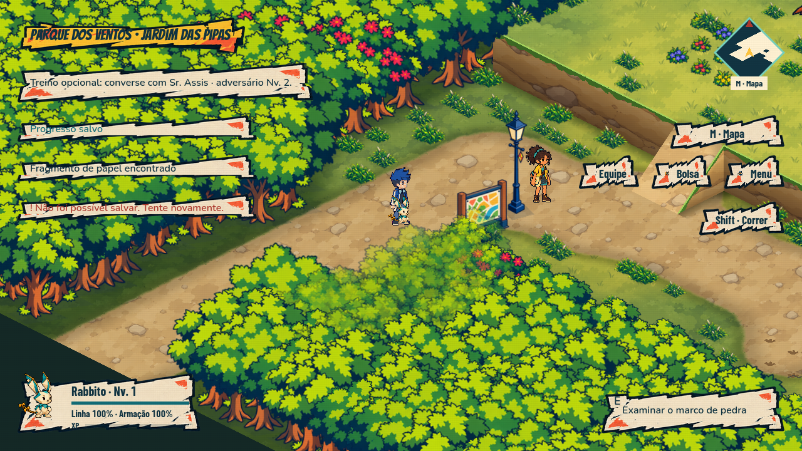
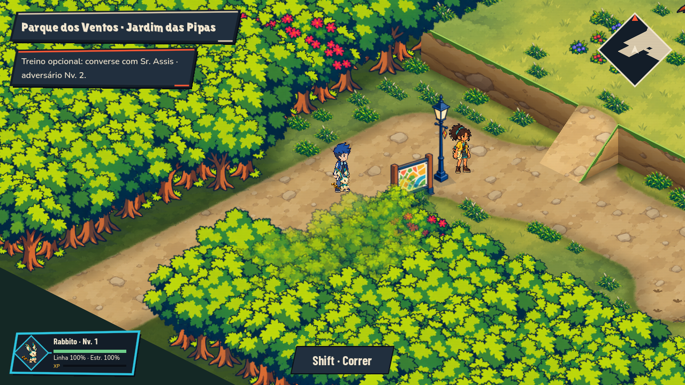

Mural de Kronasta · Exploração
Capturas nativas do consumidor Godot em fixtures isoladas. Os comandos são controles nativos; a arte não contém rótulos de destino.
Relatório · 616 verificações novas · Dimensões e integridade
Interação, avisos e comandos de mouse

Exploração antes da PIP-132
